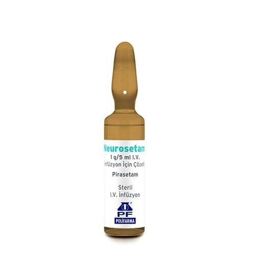

Neurosetam 1 g/5 ml IV İnfüzyon İçin Çözelti , 12 Adet

Ne için kullanılır
KT · Bölüm 1NEUROSETAM berrak ve renksiz bir çözeltidir. Her kutuda 12 ampul bulunur.
NEUROSETAM nootropik ilaç grubundadır. Nootropikler, öğrenme, hafıza, dikkat ve farkındalık gibi bilişsel süreçleri, yatıştırıcı veya uyarıcı etki ile bağlantılı olmaksızın geliştirir.
NEUROSETAM; Erişkinlerde - Hafıza kaybı, dikkat eksikliği ve araç kullanma yeteneğinin kaybı gibi bulgularla seyreden psiko-organik sendromların belirtiye yönelik (semptomatik) tedavisi, - Kortikal kaynaklı miyoklonus (bir veya daha fazla uzuvda veya gövdede kısa, ani ("flaş- benzeri") kas kasılmaları) tedavisi (tek başına veya diğer ilaçlarla birlikte), - Baş dönmesi ve ilişkili denge bozuklukları (vazomotor veya psişik kökenli sersemlik hissi hariç) için kullanılır. Bu ilacı kullanmaya başlamadan önce bu KULLANMA TALİMATINI dikkatlice okuyunuz, çünkü sizin için önemli bilgiler içermektedir. • Bu kullanma talimatını saklayınız. Daha sonra tekrar okumaya ihtiyaç duyabilirsiniz. • Eğer ilave sorularınız olursa, lütfen doktorunuza veya eczacınıza danışınız. • Bu ilaç kişisel olarak sizin için reçete edilmiştir, başkalarına vermeyiniz. • Bu ilacın kullanımı sırasında, doktora veya hastaneye gittiğinizde doktorunuza bu ilacı kullandığınızı söyleyiniz. • Bu talimatta yazılanlara aynen uyunuz. İlaç hakkında size önerilen dozun dışında yüksek veya düşük doz kullanmayınız.
Çocuklarda - 8 yaş ve üzeri çocuklarda konuşma terapisi gibi uygun yaklaşımlar ile birlikte disleksi (okuma/yazma güçlüğü) tedavisinde kullanılır.